Overview of the tidyHeatmap package
Stefano Mangiola
2025-01-26
Source:vignettes/introduction.Rmd
introduction.Rmd

Citation
Mangiola et al., (2020). tidyHeatmap: an R package for modular heatmap production based on tidy principles. Journal of Open Source Software, 5(52), 2472, https://doi.org/10.21105/joss.02472
Please have a look also to
- tidygate for adding custom gate information to your tibble
- tidySingleCellExperiment for tidy manipulation of Seurat objects
- tidyseurat for tidy manipulation of Seurat objects
- tidybulk for tidy high-level data analysis and manipulation
- tidySummarizedExperiment for heatmaps produced with tidy principles
website: stemangiola.github.io/tidyHeatmap
tidyHeatmap is a package that introduces tidy principles
to the creation of information-rich heatmaps. This package uses ComplexHeatmap
as graphical engine.
Advantages:
- Modular annotation with just specifying column names
- Custom grouping of rows is easy to specify providing a grouped tbl.
For example
df |> group_by(...) - Labels size adjusted by row and column total number
- Default use of Brewer and Viridis palettes
Functions/utilities available
| Function | Description |
|---|---|
heatmap |
Plots base heatmap |
group_by |
dplyr function - groups heatpmap rows/columns |
annotation_tile |
Adds tile annotation to the heatmap |
annotation_point |
Adds point annotation to the heatmap |
annotation_bar |
Adds bar annotation to the heatmap |
annotation_numeric |
Adds bar + number annotation to the heatmap |
annotation_line |
Adds line annotation to the heatmap |
layer_text |
Add layer of text on top of the heatmap |
layer_point |
Adds layer of symbols on top of the heatmap |
layer_square |
Adds layer of symbols on top of the heatmap |
layer_diamond |
Adds layer of symbols on top of the heatmap |
layer_arrow_up |
Adds layer of symbols on top of the heatmap |
layer_arrow_down |
Add layer of symbols on top of the heatmap |
layer_star |
Add layer of symbols on top of the heatmap |
layer_asterisk |
Add layer of symbols on top of the heatmap |
split_rows |
Splits the rows based on the dendogram |
split_columns |
Splits the columns based on the dendogram |
save_pdf |
Saves the PDF of the heatmap |
+ |
Integrate heatmaps side-by-side |
as_ComplexHeatmap |
Convert the tidyHeatmap output to ComplexHeatmap for non-standard “drawing” |
wrap_heatmap |
Allows the integration with the patchwork package |
Installation
To install the most up-to-date version
devtools::install_github("stemangiola/tidyHeatmap")To install the most stable version (however please keep in mind that this package is under a maturing lifecycle stage)
install.packages("tidyHeatmap")Contribution
If you want to contribute to the software, report issues or problems with the software or seek support please open an issue here
Input data frame
The heatmaps visualise a multi-element, multi-feature dataset, annotated with independent variables. Each observation is a element-feature pair (e.g., person-physical characteristics).
| element | feature | value | independent_variables |
|---|---|---|---|
chr or fctr
|
chr or fctr
|
numeric |
… |
Let’s transform the mtcars dataset into a tidy “element-feature-independent variables” data frame. Where the independent variables in this case are ‘hp’ and ‘vs’.
mtcars_tidy <-
mtcars |>
as_tibble(rownames="Car name") |>
# Scale
mutate_at(vars(-`Car name`, -hp, -vs), scale) |>
# tidyfy
pivot_longer(cols = -c(`Car name`, hp, vs), names_to = "Property", values_to = "Value")
mtcars_tidy## # A tibble: 288 × 5
## `Car name` hp vs Property Value[,1]
## <chr> <dbl> <dbl> <chr> <dbl>
## 1 Mazda RX4 110 0 mpg 0.151
## 2 Mazda RX4 110 0 cyl -0.105
## 3 Mazda RX4 110 0 disp -0.571
## 4 Mazda RX4 110 0 drat 0.568
## 5 Mazda RX4 110 0 wt -0.610
## 6 Mazda RX4 110 0 qsec -0.777
## 7 Mazda RX4 110 0 am 1.19
## 8 Mazda RX4 110 0 gear 0.424
## 9 Mazda RX4 110 0 carb 0.735
## 10 Mazda RX4 Wag 110 0 mpg 0.151
## # ℹ 278 more rowsPlotting
For plotting, you simply pipe the input data frame into heatmap, specifying:
- The rows, cols relative column names (mandatory)
- The value column name (mandatory)
- The annotations column name(s)
mtcars
mtcars_heatmap <-
mtcars_tidy |>
heatmap(`Car name`, Property, Value, scale = "row" ) |>
annotation_tile(hp)## Warning: Using one column matrices in `filter()` was deprecated in dplyr 1.1.0.
## ℹ Please use one dimensional logical vectors instead.
## ℹ The deprecated feature was likely used in the tidyHeatmap package.
## Please report the issue at
## <https://github.com/stemangiola/tidyHeatmap/issues>.
## This warning is displayed once every 8 hours.
## Call `lifecycle::last_lifecycle_warnings()` to see where this warning was
## generated.
mtcars_heatmap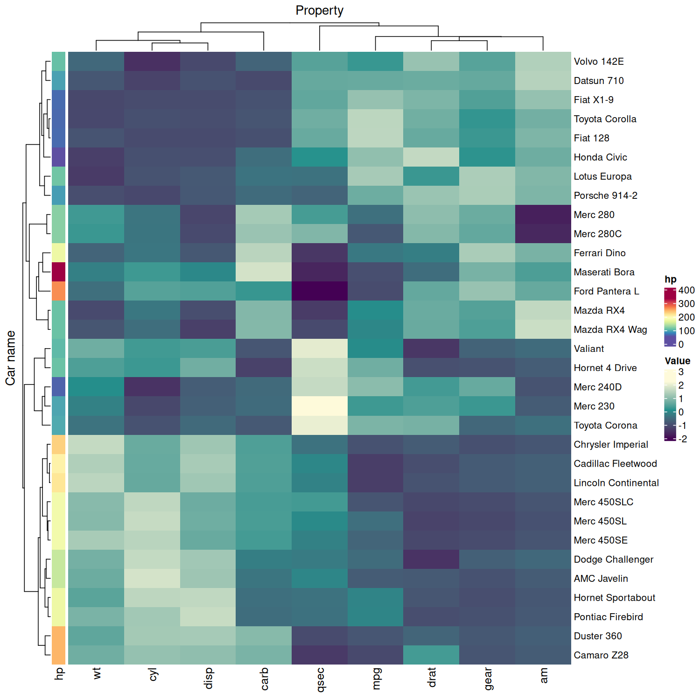
Saving
mtcars_heatmap |> save_pdf("mtcars_heatmap.pdf")Clustering
Choose alternative clustering distance and methods.
tidyHeatmap::pasilla |>
heatmap(
.column = sample,
.row = symbol,
.value = `count normalised adjusted`,
scale = "row",
# Arguments passed to ComplexHeatmap
clustering_distance_rows = "manhattan",
clustering_distance_columns = "manhattan",
clustering_method_rows = "ward.D",
clustering_method_columns = "ward.D"
) 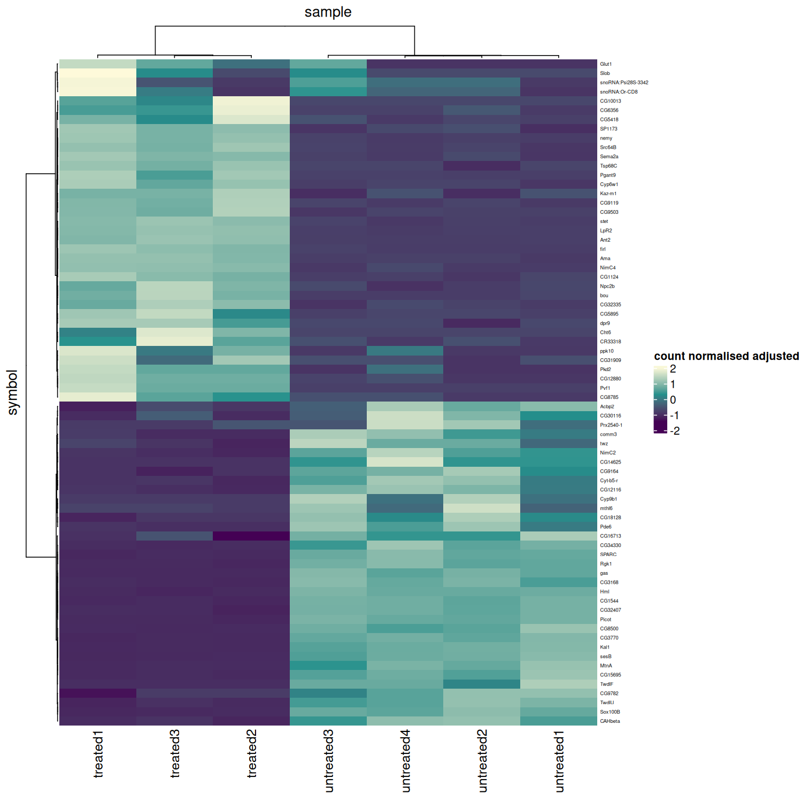
Grouping and splitting
We can easily group the data (one group per dimension maximum, at the moment only the vertical dimension is supported) with dplyr, and the heatmap will be grouped accordingly
# Make up more groupings
mtcars_tidy_groupings =
mtcars_tidy |>
mutate(property_group = if_else(Property %in% c("cyl", "disp"), "Engine", "Other"))
mtcars_tidy_groupings |>
group_by(vs, property_group) |>
heatmap(`Car name`, Property, Value, scale = "row" ) |>
annotation_tile(hp)We can provide colour palettes to groupings
mtcars_tidy_groupings |>
group_by(vs, property_group) |>
heatmap(
`Car name`, Property, Value ,
scale = "row",
palette_grouping = list(
# For first grouping (vs)
c("#66C2A5", "#FC8D62"),
# For second grouping (property_group)
c("#b58b4c", "#74a6aa")
)
) |>
annotation_tile(hp)
We can split based on the cladogram
mtcars_tidy |>
heatmap(`Car name`, Property, Value, scale = "row" ) |>
split_rows(2) |>
split_columns(2)We can split on kmean clustering (using ComplexHeatmap options, it is stochastic)
mtcars_tidy |>
heatmap(
`Car name`, Property, Value,
scale = "row",
row_km = 2,
column_km = 2
) Custom palettes
We can easily use custom palette, using strings, hexadecimal color character vector,
mtcars_tidy |>
heatmap(
`Car name`,
Property,
Value,
scale = "row",
palette_value = c("red", "white", "blue")
)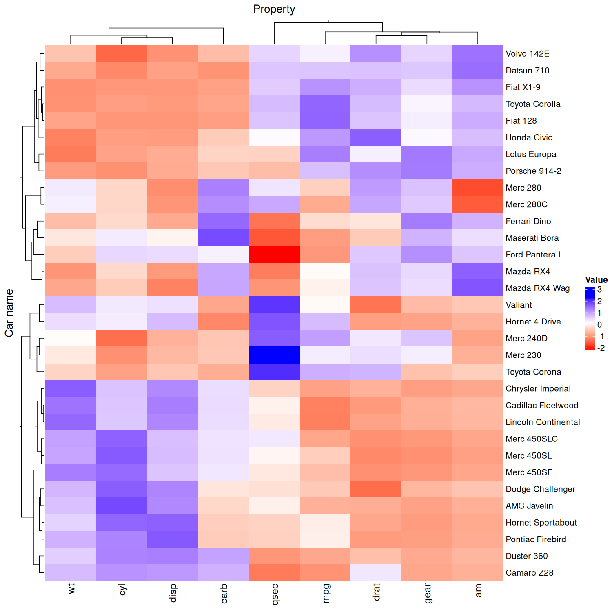
A better-looking blue-to-red palette
mtcars_tidy |>
heatmap(
`Car name`,
Property,
Value,
scale = "row",
palette_value = circlize::colorRamp2(
seq(-2, 2, length.out = 11),
RColorBrewer::brewer.pal(11, "RdBu")
)
)Or a grid::colorRamp2 function for higher flexibility
mtcars_tidy |>
heatmap(
`Car name`,
Property,
Value,
scale = "row",
palette_value = circlize::colorRamp2(c(-2, -1, 0, 1, 2), viridis::magma(5))
)
We can use custom colors for tile annotation
mtcars_tidy |>
heatmap(
`Car name`,
Property,
Value,
scale = "row"
) |>
add_tile(
hp,
palette = c("red", "white", "blue")
)## Warning: `add_tile()` was deprecated in tidyHeatmap 1.9.0.
## ℹ Please use `annotation_tile()` instead
## This warning is displayed once every 8 hours.
## Call `lifecycle::last_lifecycle_warnings()` to see where this warning was
## generated.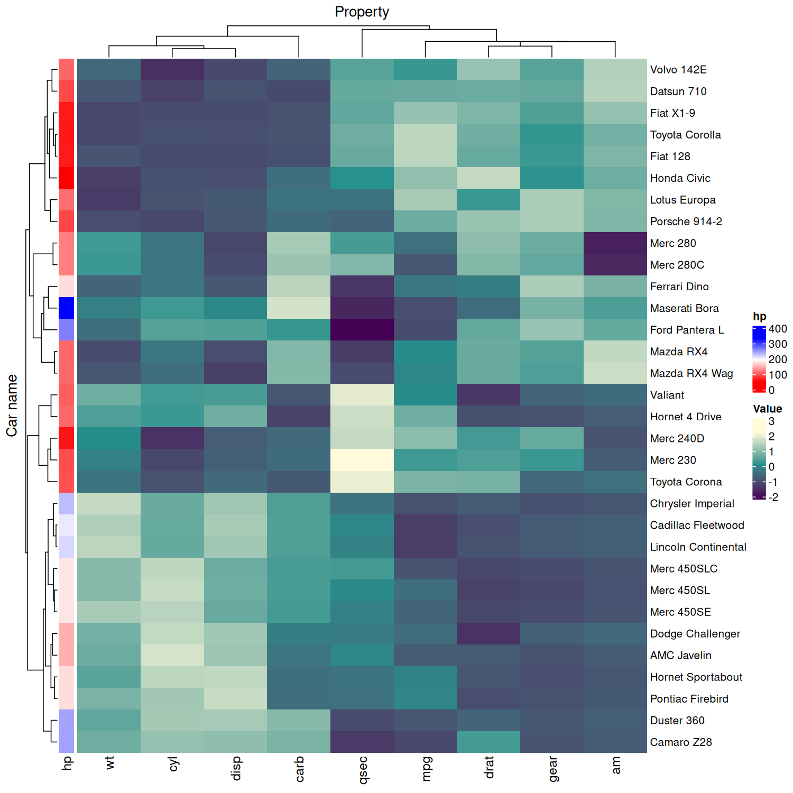
We can use grid::colorRamp2 function for tile annotation for specific color scales
mtcars_tidy |>
heatmap(
`Car name`,
Property,
Value,
scale = "row"
) |>
annotation_tile(
hp,
palette = circlize::colorRamp2(c(0, 100, 200, 300), viridis::magma(4))
)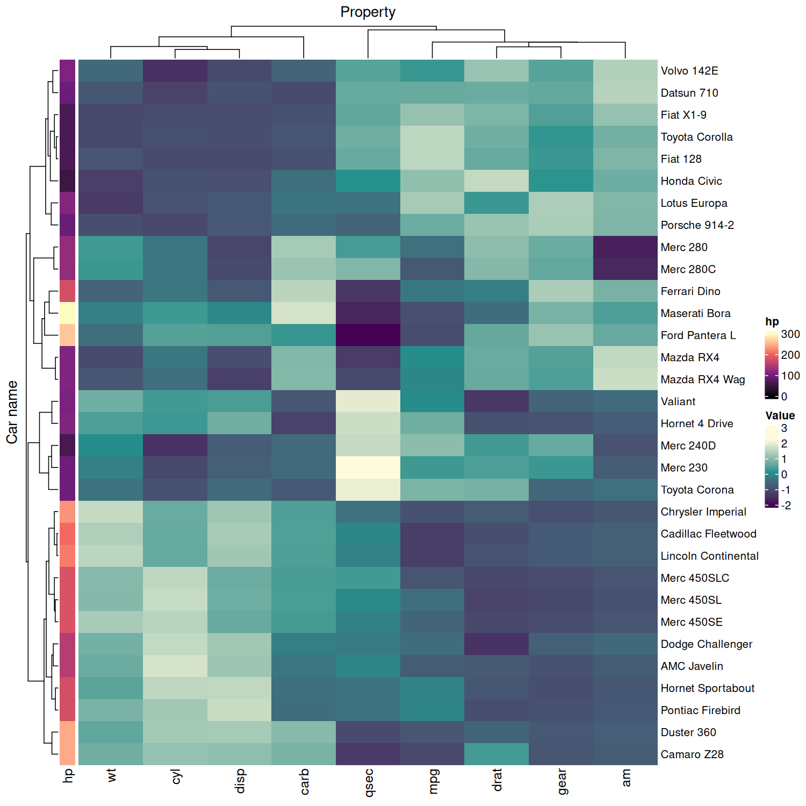
Multiple groupings and annotations
tidyHeatmap::pasilla |>
group_by(location, type) |>
heatmap(
.column = sample,
.row = symbol,
.value = `count normalised adjusted`,
scale = "row"
) |>
annotation_tile(condition) |>
annotation_tile(activation)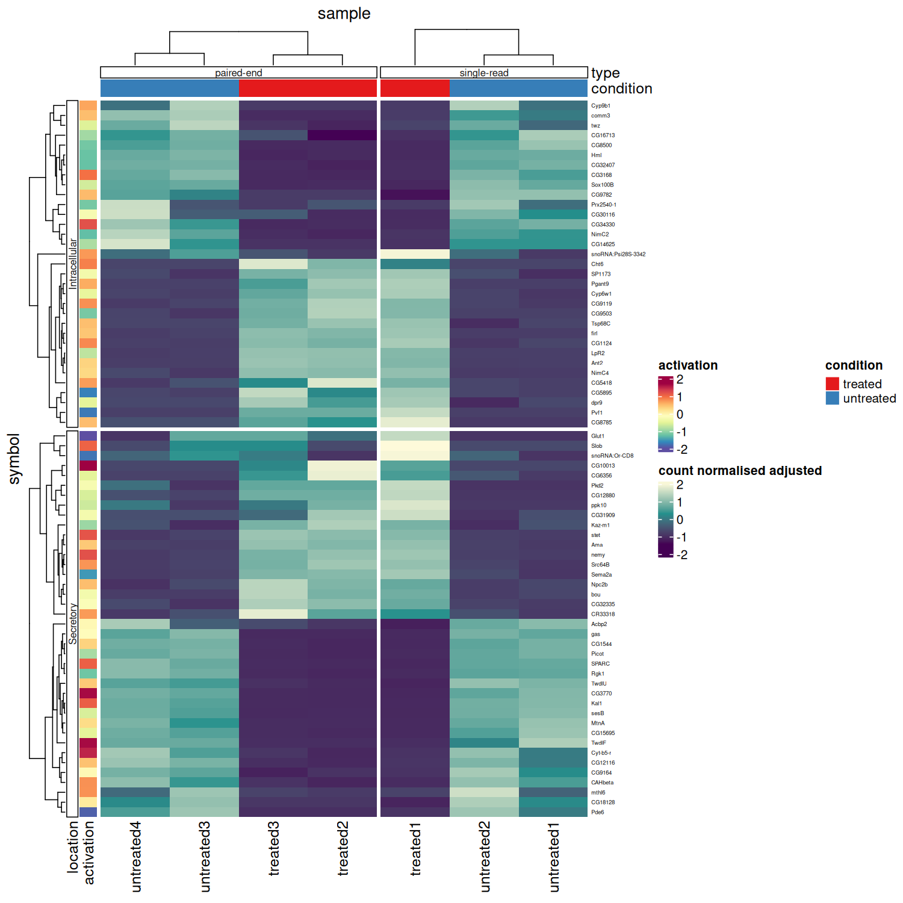
Remove legends, adding aesthetics to annotations in a modular
fashion, using ComplexHeatmap arguments
tidyHeatmap::pasilla |>
group_by(location, type) |>
heatmap(
.column = sample,
.row = symbol,
.value = `count normalised adjusted`,
scale = "row",
show_heatmap_legend = FALSE
) |>
annotation_tile(condition, show_legend = FALSE) |>
annotation_tile(activation, show_legend = FALSE)Annotation types
“tile”, “point”, “bar” and “line” are available
# Create some more data points
pasilla_plus <-
tidyHeatmap::pasilla |>
dplyr::mutate(activation_2 = activation, activation_3 = activation) |>
tidyr::nest(data = -sample) |>
dplyr::mutate(size = rnorm(n(), 4,0.5)) |>
dplyr::mutate(age = runif(n(), 50, 200)) |>
tidyr::unnest(data)
# Plot
pasilla_plus |>
heatmap(
.column = sample,
.row = symbol,
.value = `count normalised adjusted`,
scale = "row"
) |>
annotation_tile(condition) |>
annotation_point(activation) |>
annotation_numeric(activation_3) |>
annotation_tile(activation_2) |>
annotation_bar(size) |>
annotation_line(age)Annotation size
We can customise annotation sizes using the
grid::unit(), and the size of their names using in-built
ComplexHeatmap arguments
pasilla_plus |>
heatmap(
.column = sample,
.row = symbol,
.value = `count normalised adjusted`,
scale = "row"
) |>
annotation_tile(condition, size = unit(0.3, "cm"), annotation_name_gp= gpar(fontsize = 8)) |>
annotation_point(activation, size = unit(0.3, "cm"), annotation_name_gp= gpar(fontsize = 8)) |>
annotation_tile(activation_2, size = unit(0.3, "cm"), annotation_name_gp= gpar(fontsize = 8)) |>
annotation_bar(size, size = unit(0.3, "cm"), annotation_name_gp= gpar(fontsize = 8)) |>
annotation_line(age, size = unit(0.3, "cm"), annotation_name_gp= gpar(fontsize = 8))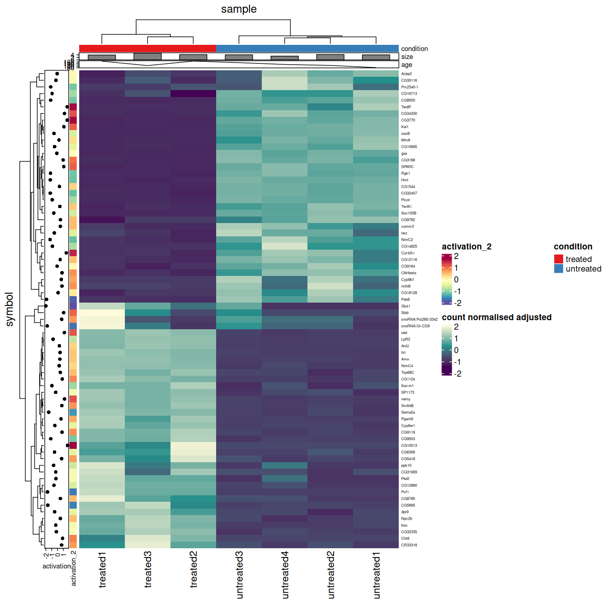
Layer symbol
Add a layer on top of the heatmap
tidyHeatmap::pasilla |>
# filter
filter(symbol %in% head(unique(tidyHeatmap::pasilla$symbol), n = 10)) |>
# Add dynamic size
mutate(my_size = runif(n(), 1,5)) |>
heatmap(
.column = sample,
.row = symbol,
.value = `count normalised adjusted`,
scale = "row"
) |>
layer_point(
`count normalised adjusted log` > 6 & sample == "untreated3"
) |>
layer_square(
`count normalised adjusted log` > 6 & sample == "untreated2",
.size = my_size
) |>
layer_arrow_up(
`count normalised adjusted log` > 6 & sample == "untreated1",
.size = 4
)Layer text
Add a text layer on top of the heatmap
tidyHeatmap::pasilla |>
# filter
filter(symbol %in% head(unique(tidyHeatmap::pasilla$symbol), n = 10)) |>
# Add dynamic text
mutate(my_text = "mt", my_size = 7) |>
# Plot
heatmap(
.column = sample,
.row = symbol,
.value = `count normalised adjusted`,
scale = "row"
) |>
layer_text(
`count normalised adjusted log` > 6 & sample == "untreated3",
.value = "a",
.size = 15
) |>
layer_text(
`count normalised adjusted log` > 6 & sample == "untreated2",
.value = my_text,
.size = my_size
)Adding heatmap side-by-side
p_heatmap = heatmap(mtcars_tidy, `Car name`, Property, Value, scale = "row")
p_heatmap + p_heatmap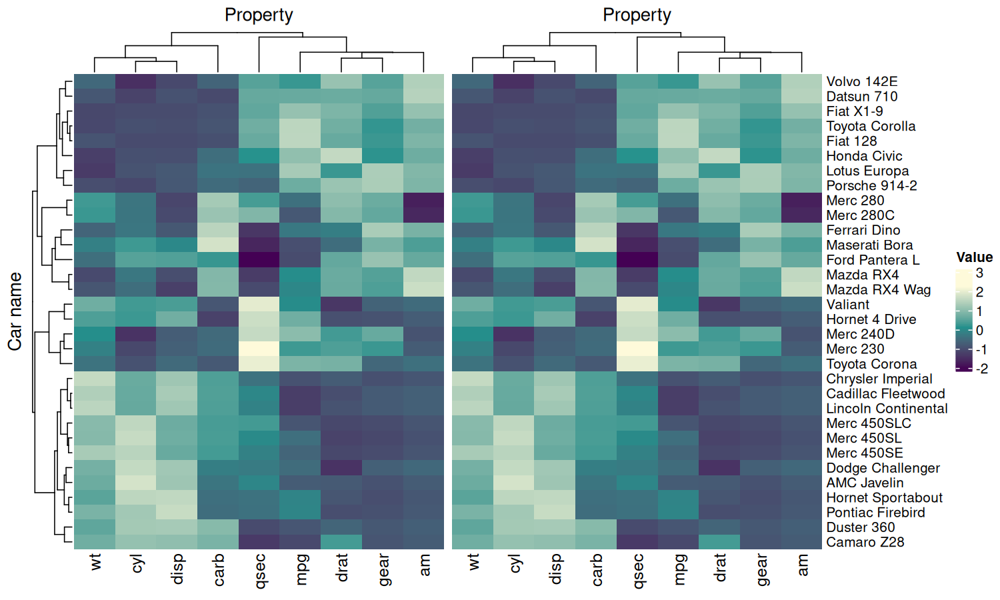
ComplexHeatmap further styling
Drop row clustering
mtcars_tidy |>
heatmap(
`Car name`, Property, Value,
scale = "row",
cluster_rows = FALSE
) 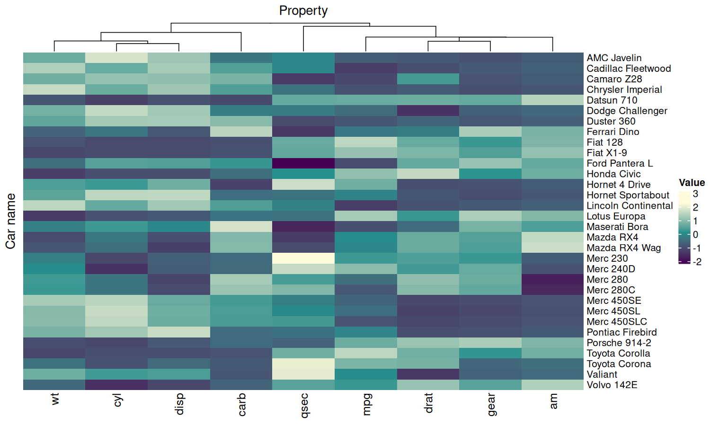
Reorder rows elements
library(forcats)
mtcars_tidy |>
mutate(`Car name` = forcats::fct_reorder(`Car name`, `Car name`, .desc = TRUE)) %>%
heatmap(
`Car name`, Property, Value,
scale = "row",
cluster_rows = FALSE
) 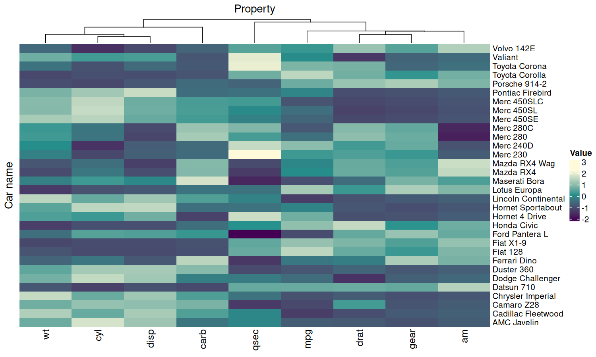
Size of rows/columns titles and names
mtcars_tidy |>
mutate(`Car name` = forcats::fct_reorder(`Car name`, `Car name`, .desc = TRUE)) %>%
heatmap(
`Car name`, Property, Value,
scale = "row",
row_names_gp = gpar(fontsize = 7),
column_names_gp = gpar(fontsize = 7),
column_title_gp = gpar(fontsize = 7),
row_title_gp = gpar(fontsize = 7)
) 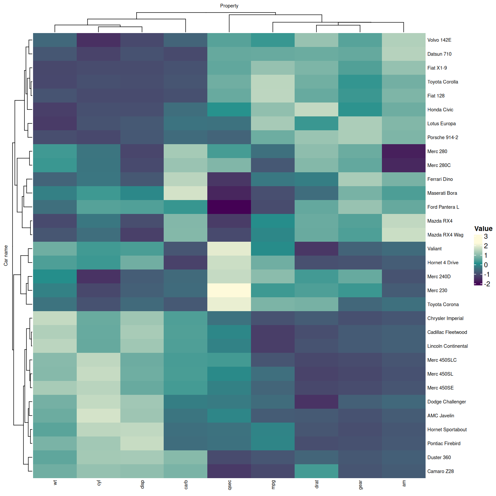
Align numeric annotation
This can be done only for annotation_numeric because of
ComplexHeatmap requirements
(?ComplexHeatmap::anno_numeric)
mtcars_tidy |>
mutate(`Car name` = forcats::fct_reorder(`Car name`, `Car name`, .desc = TRUE)) %>%
heatmap(
`Car name`, Property, Value,
scale = "row"
) |>
annotation_numeric(hp, align_to="right")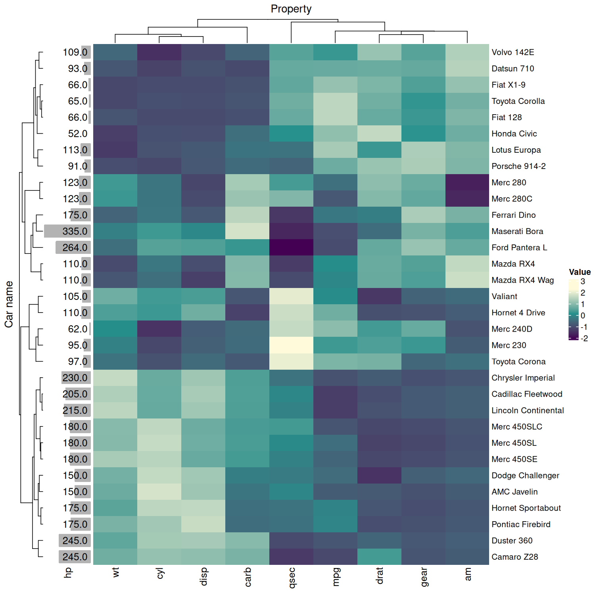
External ComplexHeatmap functionalities
ComplexHeatmap has some graphical functionalities that are not
included in the standard functional framework. We can use
as_ComplexHeatmap to convert our output before applying
drawing options.
Chainging side of legends
heatmap(mtcars_tidy, `Car name`, Property, Value, scale = "row" ) %>%
as_ComplexHeatmap() %>%
ComplexHeatmap::draw(heatmap_legend_side = "left" )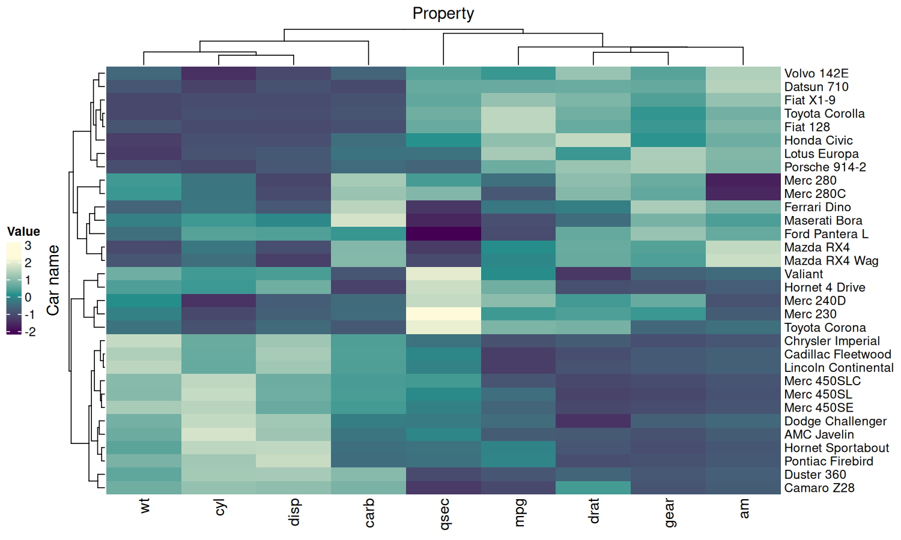
Add title using draw from
ComplexHeatmap
mtcars_tidy |>
heatmap(`Car name`, Property, Value, scale = "row" ) |>
as_ComplexHeatmap() |>
ComplexHeatmap::draw(
column_title = "TITLE",
column_title_gp = gpar(fontsize = 16)
)
Using patchwork to integrate heatmaps
library(ggplot2)
library(patchwork)
p_heatmap =
mtcars_tidy |>
heatmap(
`Car name`, Property, Value,
scale = "row",
show_heatmap_legend = FALSE,
row_names_gp = gpar(fontsize = 7)
)
p_ggplot = data.frame(value = 1:10) |> ggplot(aes(value)) + geom_density()
wrap_heatmap(p_heatmap) +
p_ggplot +
# Add padding for better aesthetics
wrap_heatmap(
p_heatmap,
padding = grid::unit(c(-30, -0, -0, -10), "points" ),
clip = FALSE
) +
plot_layout(width = c(1, 0.3, 1))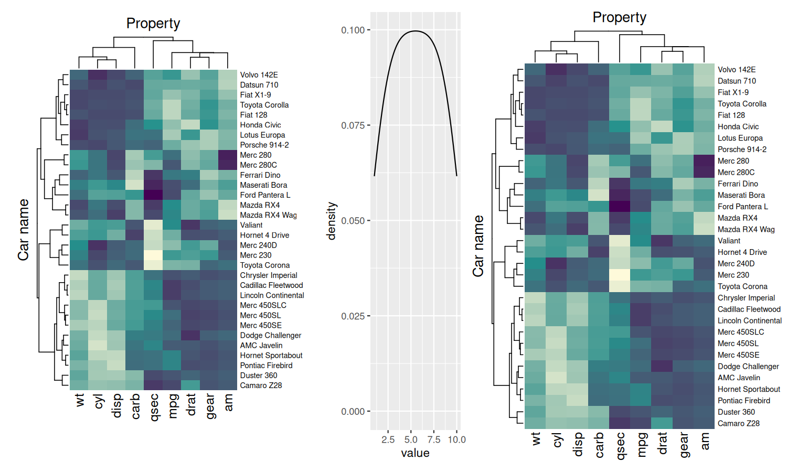
Add title using ggtitle from ggplot2
mtcars_tidy |>
heatmap(`Car name`, Property, Value, scale = "row" ) |>
wrap_heatmap() +
ggplot2::ggtitle("TITLE")Session Info
## R Under development (unstable) (2025-01-20 r87609)
## Platform: x86_64-pc-linux-gnu
## Running under: Ubuntu 24.04.1 LTS
##
## Matrix products: default
## BLAS: /usr/lib/x86_64-linux-gnu/openblas-pthread/libblas.so.3
## LAPACK: /usr/lib/x86_64-linux-gnu/openblas-pthread/libopenblasp-r0.3.26.so; LAPACK version 3.12.0
##
## locale:
## [1] LC_CTYPE=en_US.UTF-8 LC_NUMERIC=C
## [3] LC_TIME=en_US.UTF-8 LC_COLLATE=en_US.UTF-8
## [5] LC_MONETARY=en_US.UTF-8 LC_MESSAGES=en_US.UTF-8
## [7] LC_PAPER=en_US.UTF-8 LC_NAME=C
## [9] LC_ADDRESS=C LC_TELEPHONE=C
## [11] LC_MEASUREMENT=en_US.UTF-8 LC_IDENTIFICATION=C
##
## time zone: UTC
## tzcode source: system (glibc)
##
## attached base packages:
## [1] grid stats graphics grDevices utils datasets methods
## [8] base
##
## other attached packages:
## [1] patchwork_1.3.0 ggplot2_3.5.1 forcats_1.0.0 tidyHeatmap_1.11.0
## [5] tidyr_1.3.1 dplyr_1.1.4
##
## loaded via a namespace (and not attached):
## [1] viridis_0.6.5 utf8_1.2.4 sass_0.4.9
## [4] generics_0.1.3 shape_1.4.6.1 digest_0.6.37
## [7] magrittr_2.0.3 evaluate_1.0.3 RColorBrewer_1.1-3
## [10] iterators_1.0.14 circlize_0.4.16 fastmap_1.2.0
## [13] foreach_1.5.2 doParallel_1.0.17 jsonlite_1.8.9
## [16] GlobalOptions_0.1.2 gridExtra_2.3 ComplexHeatmap_2.23.0
## [19] purrr_1.0.2 viridisLite_0.4.2 scales_1.3.0
## [22] codetools_0.2-20 textshaping_1.0.0 jquerylib_0.1.4
## [25] cli_3.6.3 rlang_1.1.5 crayon_1.5.3
## [28] munsell_0.5.1 withr_3.0.2 cachem_1.1.0
## [31] yaml_2.3.10 tools_4.5.0 parallel_4.5.0
## [34] colorspace_2.1-1 GetoptLong_1.0.5 BiocGenerics_0.53.5
## [37] vctrs_0.6.5 R6_2.5.1 png_0.1-8
## [40] matrixStats_1.5.0 stats4_4.5.0 lifecycle_1.0.4
## [43] S4Vectors_0.45.2 fs_1.6.5 htmlwidgets_1.6.4
## [46] IRanges_2.41.2 clue_0.3-66 cluster_2.1.8
## [49] ragg_1.3.3 dendextend_1.19.0 pkgconfig_2.0.3
## [52] desc_1.4.3 gtable_0.3.6 pkgdown_2.1.1
## [55] pillar_1.10.1 bslib_0.8.0 glue_1.8.0
## [58] systemfonts_1.2.1 xfun_0.50 tibble_3.2.1
## [61] tidyselect_1.2.1 knitr_1.49 farver_2.1.2
## [64] rjson_0.2.23 htmltools_0.5.8.1 labeling_0.4.3
## [67] rmarkdown_2.29 compiler_4.5.0